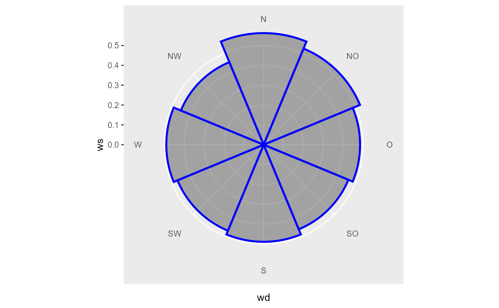

Wraps ggplot2::cut_width() function with width = binwidth. closed = "left", boundary = 0
as fixed arguments
Usage
cut_wd(
wd,
binwidth = 45,
labels = c("N", "[5.6,16.9)", "NNO", "[28.1,39.4)", "NO", "[50.6,61.2)", "ONO",
"[73.1,84.4)", "O", "[95.6,106.9)", "OSO", "[118.1,129.4)", "SO", "[140.6,151.9)",
"SSO", "[163.1,174.4)", "S", "[185.6,196.9)", "SSW", "[208.1,219.4)", "SW",
"[230.6,241.9)", "WSW", "[253.1,264.)", "W", "[275.6,286.9)", "WNW", "[298.1,309.4)",
"NW", "[320.6,331.9)", "NNW", "[343.1,354.4)"),
...
)Arguments
- wd
numeric vector of wind directions in °
- binwidth
width for
ggplot2::cut_width()in degrees wind direction (must fullfillbinwidth %in% 360 / c(4, 8, 16, 32))- labels
character vector as labels for wind direction bins; can be NULL (no labels are returned), if !is.null(labels) then length(labels) == 32 must be fullfilled (actual labels are subsampled with indices of seq(1, length(labels), length(labels) / nsectors))
- ...
passed to
ggplot2::cut_width()
Examples
library(ggplot2)
wd <- seq(0, 359)
ws <- runif(length(wd))
# helper function to visualise cuts
plot_cut <- function(wd, ws) {
nSectors <- length(levels(wd))
data <- tibble::tibble(wd = wd, ws = ws) %>%
dplyr::group_by(wd) %>%
dplyr::summarise(ws = mean(ws))
ggplot(data, aes(x = wd, y = ws)) +
geom_bar(stat = "identity", width = 1, color = "blue", size = 1, alpha = 0.5) +
coord_polar2(start = - pi / nSectors) +
scale_x_discrete(expand = c(0, 0))
}
# defaults
plot_cut(cut_wd(wd), ws)

# maximum number of cuts
plot_cut(cut_wd(wd, binwidth = 11.25), ws)
 # maximum number of cuts with text labels
plot_cut(cut_wd(wd, binwidth = 22.5), ws)
# maximum number of cuts with text labels
plot_cut(cut_wd(wd, binwidth = 22.5), ws)
 # change label text
labels <- c("North", "East", "South", "West")
plot_cut(cut_wd(wd, binwidth = 90, labels = labels), ws)
# change label text
labels <- c("North", "East", "South", "West")
plot_cut(cut_wd(wd, binwidth = 90, labels = labels), ws)